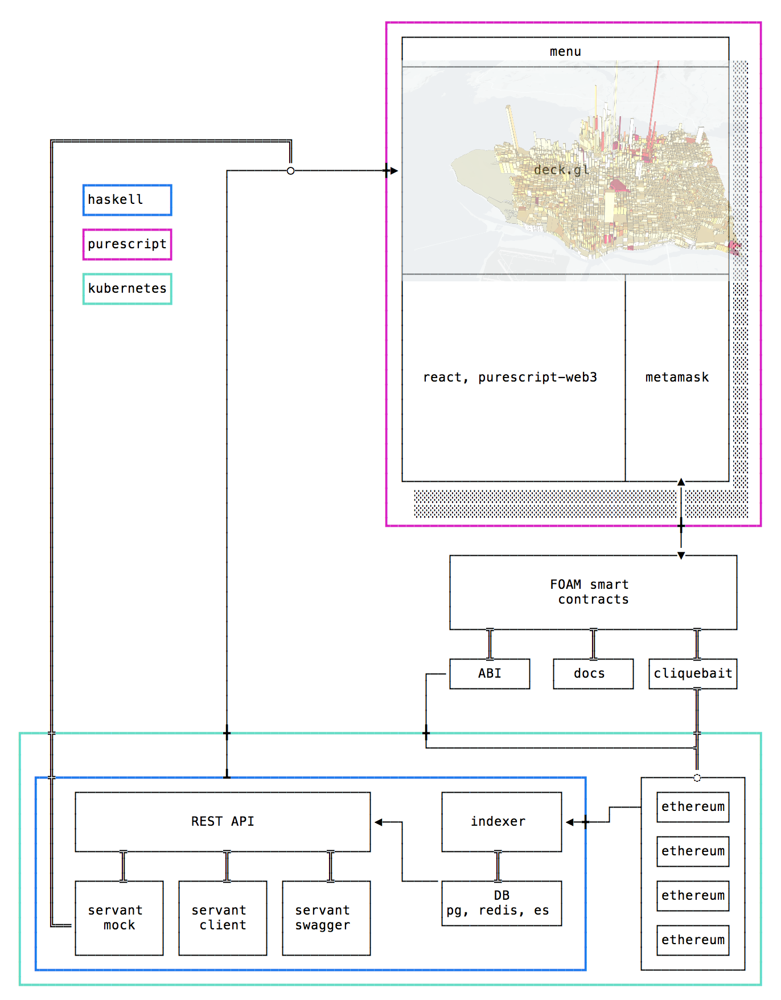

This document outlines the general architecture that powers the FOAM API.
The FOAM architecture consists of three major parts:
The guiding principles are
DRY (“don’t repeat yourself”)We leverage Haskell and Purescript to deliver on these principles. Haskell’s and Purescript’s strong type-system enables us to describe the functionality once and derive all interacting components from it - at compile time.
Because of Haskell’s mature set of libraries and integrations (and increasingly this applies to Purescript as well), we do not have to re-invent anything when it comes to utilizing mature products such as Postgres and Redis. What’s perhaps harder for someone not entrenched in these two programming languages to appreciate, is the powerful set of abstractions that are available to us through using these languages. They manifest in both how we write code and how we can combine libraries.
purescript-web3-generator generates all our code from the ABI that interacts with the blockchain. hs-web3 and TemplateHaskell derives all our database schemas from the same ABI.servant generates our swagger documentation in addition to our javascript clients. Moreover, our mocked data is generated by the same API definition.The diagram below outlines the different parts, and also the direction in which parts communicate with eachother. Communication here really means everything from API calls and websockets to compile-time information flow.
